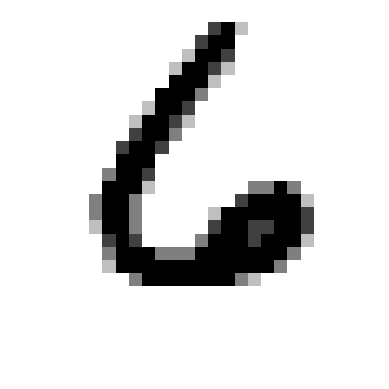
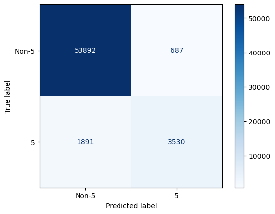
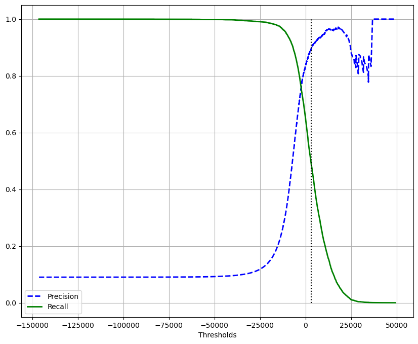
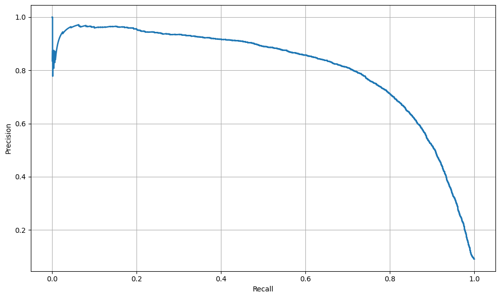
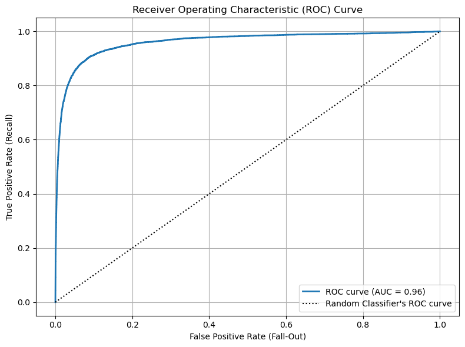
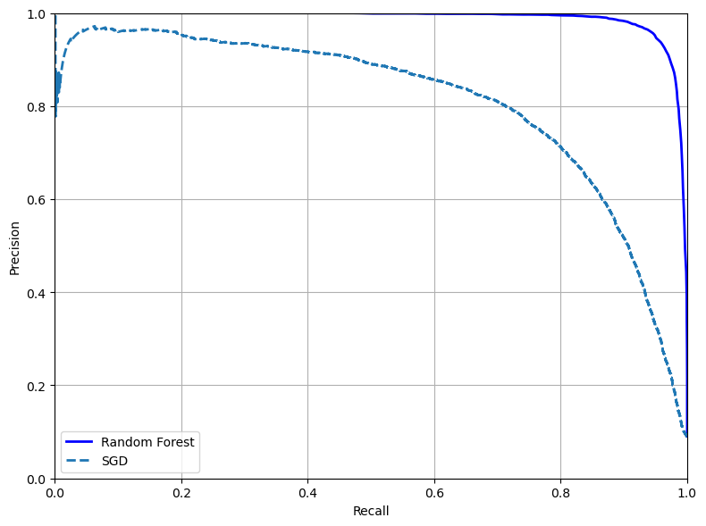
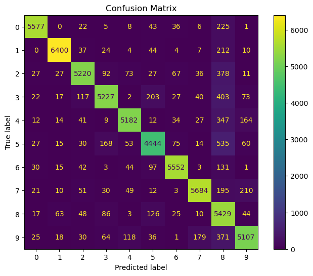
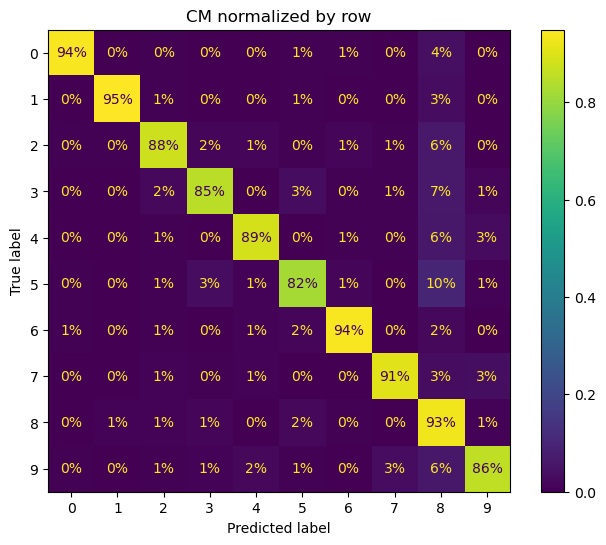
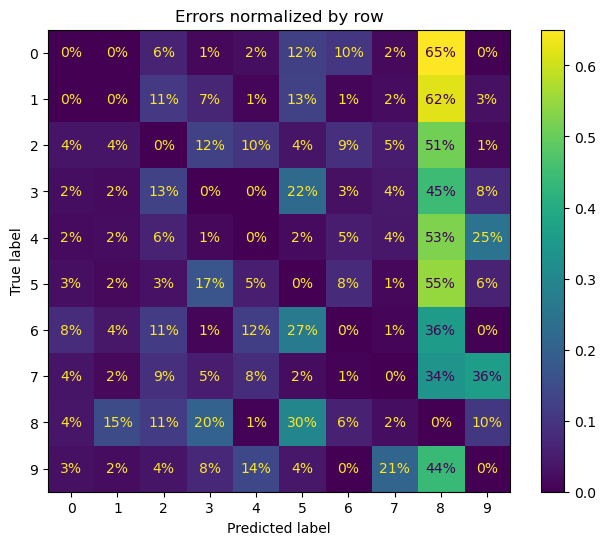
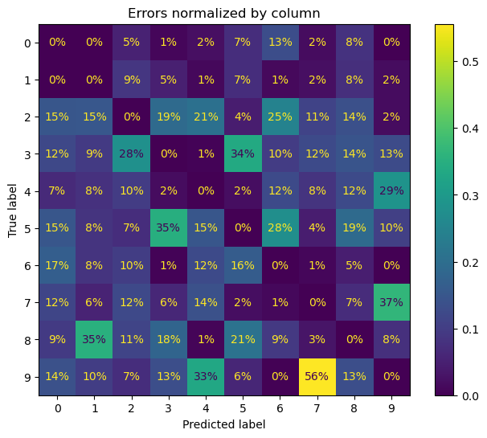

import pandas as pd
import numpy as np
import seaborn as sns
import matplotlib.pyplot as pltGERON - END-TO-END PROJECT
from sklearn.datasets import fetch_openml
mnist = fetch_openml("mnist_784", as_frame = False)X,y = mnist.data,mnist.targetXarray([[0, 0, 0, ..., 0, 0, 0],
[0, 0, 0, ..., 0, 0, 0],
[0, 0, 0, ..., 0, 0, 0],
...,
[0, 0, 0, ..., 0, 0, 0],
[0, 0, 0, ..., 0, 0, 0],
[0, 0, 0, ..., 0, 0, 0]], dtype=int64)X.shape(70000, 784)y.shape(70000,)def plot_digit(image_data):
image = image_data.reshape(28,28)
plt.imshow(image,cmap = "binary")
plt.axis("off")plot_digit(X[323])
plt.show()
y[323]'6'X_train,X_test,y_train,y_test = X[:60000],X[60000:],y[:60000],y[60000:]Binary Classsifier
y_train_5 = (y_train == "5")
y_test_5 = (y_test == "5")from sklearn.linear_model import SGDClassifiersgd_clf = SGDClassifier(random_state = 42)sgd_clf.fit(X_train,y_train_5)SGDClassifier(random_state=42)In a Jupyter environment, please rerun this cell to show the HTML representation or trust the notebook.
On GitHub, the HTML representation is unable to render, please try loading this page with nbviewer.org.
SGDClassifier(random_state=42)
from sklearn.model_selection import cross_val_scorecross_val_score(sgd_clf, X_train,y_train_5,cv = 3, scoring = "accuracy")array([0.95035, 0.96035, 0.9604 ])from sklearn.dummy import DummyClassifierdummy_clf = DummyClassifier()
dummy_clf.fit(X_train,y_train_5)DummyClassifier()In a Jupyter environment, please rerun this cell to show the HTML representation or trust the notebook.
On GitHub, the HTML representation is unable to render, please try loading this page with nbviewer.org.
DummyClassifier()
cross_val_score(dummy_clf,X_train,y_train_5,cv = 3, scoring = "accuracy")array([0.90965, 0.90965, 0.90965])Confusion Matrices
from sklearn.model_selection import cross_val_predictJust like the cross_val_score() function, cross_val_predict() performs k-fold cross-validation, but instead of returning the evaluation scores, it returns the predictions made on each test fold. This means that you get a clean prediction for each instance in the training set (by “clean” I mean “out-of-sample”: the model makes predictions on data that it never saw during training).
y_train_pred = cross_val_predict(sgd_clf,X_train,y_train_5, cv = 3)from sklearn.metrics import confusion_matrix, ConfusionMatrixDisplaycm = confusion_matrix(y_train_5, y_train_pred)cmarray([[53892, 687],
[ 1891, 3530]], dtype=int64)Each row in a confusion matrix represents an actual class, while each column represents a predicted class
disp = ConfusionMatrixDisplay(confusion_matrix=cm, display_labels=["Non-5","5"])
disp.plot(cmap=plt.cm.Blues)
plt.show()
from sklearn.metrics import precision_score,recall_scoreprecision_score(y_train_5,y_train_pred)0.8370879772350012recall_score(y_train_5,y_train_pred)0.6511713705958311from sklearn.metrics import f1_scoref1_score(y_train_5,y_train_pred)0.7325171197343847y_scores = cross_val_predict(sgd_clf,X_train,y_train_5, cv = 3,
method = "decision_function")y_scoresarray([ 1200.93051237, -26883.79202424, -33072.03475406, ...,
13272.12718981, -7258.47203373, -16877.50840447])from sklearn.metrics import precision_recall_curveprecisions,recalls,thresholds = precision_recall_curve(y_train_5,y_scores)precisionsarray([0.09035 , 0.09035151, 0.09035301, ..., 1. , 1. ,
1. ])recallsarray([1.00000000e+00, 1.00000000e+00, 1.00000000e+00, ...,
3.68935621e-04, 1.84467810e-04, 0.00000000e+00])thresholdsarray([-146348.56726174, -142300.00705404, -137588.97581744, ...,
38871.26391927, 42216.05562787, 49441.43765905])fig,ax = plt.subplots(figsize = (10,8))
ax.plot(thresholds,precisions[:-1],"b--",label = "Precision", linewidth = 2)
ax.plot(thresholds,recalls[:-1],"g-",label = "Recall",linewidth = 2)
ax.vlines(3000, 0,1.0,"k","dotted")
ax.set(xlabel = "Thresholds")
ax.legend()
plt.grid()
plt.show()
fig,ax = plt.subplots(figsize = (10,6))
ax.plot(recalls,precisions,linewidth = 2,label = "Precision/Recall curve")
ax.grid()
ax.set(xlabel = "Recall", ylabel = "Precision")
plt.tight_layout()
plt.show()
You can search for the lowest threshold that gives you at least 90% precision. For this, you can use the NumPy array’s argmax() method. This returns the first index of the maximum value, which in this case means the fi True value.lue
idx_for_90_precision = (precisions>= 0.90).argmax()
threshold_for_90_precision = thresholds[idx_for_90_precision]
threshold_for_90_precision3370.0194991439557y_train_pred_90 = (y_scores >= threshold_for_90_precision)precision_score(y_train_5, y_train_pred_90)0.9000345901072293recall_at_90_precision = recall_score(y_train_5, y_train_pred_90)
print(recall_at_90_precision)0.4799852425751706The ROC Curve
The ROC curve plots sensitivity (recall) versus 1 – specificity. To plot the ROC curve, you first use the roc_curve() function to compute the TPR and FPR for various threshold values:
from sklearn.metrics import roc_curve,aucfpr,tpr,thresholds = roc_curve(y_train_5, y_scores)roc_auc = auc(fpr, tpr)fig,ax = plt.subplots(figsize = (8,6))
ax.plot(fpr,tpr,linewidth = 2, label = f"ROC curve (AUC = {roc_auc:.2f})")
ax.plot([0,1], [0,1], "k:", label = "Random Classifier's ROC curve")
ax.set(
title = "Receiver Operating Characteristic (ROC) Curve",
xlabel = "False Positive Rate (Fall-Out)",
ylabel = "True Positive Rate (Recall)"
)
plt.tight_layout()
ax.legend(loc="lower right")
ax.grid()
plt.show()
from sklearn.metrics import roc_auc_scoreroc_auc_score(y_train_5,y_scores)0.9604938554008616Random Forest Classifier
from sklearn.ensemble import RandomForestClassifierforest_clf = RandomForestClassifier(random_state = 42)y_probas_forest = cross_val_predict(forest_clf, X_train,y_train_5, cv = 3, method = "predict_proba")y_probas_forestarray([[0.11, 0.89],
[0.99, 0.01],
[0.96, 0.04],
...,
[0.02, 0.98],
[0.92, 0.08],
[0.94, 0.06]])The second column contains the estimated probabilities for the positive class, so let’s pass them to the precision_recall_curve() functio:n
y_scores_forest = y_probas_forest[:,1]precisions_forest,recalls_forest,thresholds_forest = precision_recall_curve(y_train_5,y_scores_forest)fig,ax = plt.subplots(figsize = (8,6))
ax.plot(recalls_forest,precisions_forest,"b-",linewidth = 2,label = "Random Forest")
ax.plot(recalls,precisions, "--", linewidth = 2, label = "SGD")
ax.set(
xlabel = "Recall",
ylabel = "Precision"
)
ax.legend()
ax.grid()
ax.set_xlim(0,1)
ax.set_ylim(0,1)
plt.tight_layout()
plt.show()
y_train_pred_forest = y_probas_forest[:,1] >= 0.5 # positive proba >= 50%f1_score(y_train_5,y_train_pred_forest)0.9274509803921569roc_auc_score(y_train_5, y_scores_forest)0.9983436731328145y_forest_preds = cross_val_predict(forest_clf, X_train,y_train_5, cv = 3)precision_score(y_train_5, y_forest_preds)0.9905083315756169recall_score(y_train_5, y_forest_preds)0.8662608374838591Multiclass Classification
One way to create a system that can classify the digit images into 10 classes (from 0 to 9) is to train 10 binary classifiers, one for each digit (a 0-detector, a 1-detector, a 2-detector, and so on). Then when you want to classify an image, you get the decision score from each classifier for that image and you select the class whose classifier outputs the highest score. This is called the one-versus-the-rest (OvR) strategy, or sometimes one-versus-all (Another strategy is to train a binary classifier for every pair of digits: one to distinguish 0s and 1s, another to distinguish 0s and 2s, another for 1s and 2s, and so on. This is called the one-versus-one (OvO) strategy. If there are N classes, you need to train N × (N – 1) / 2 classifi.For most binary classification algorithms, however, OvR is preferred.ersOvA).
from sklearn.svm import SVCsvm_clf = SVC(random_state = 42)
svm_clf.fit(X_train[:2000], y_train[:2000])SVC(random_state=42)In a Jupyter environment, please rerun this cell to show the HTML representation or trust the notebook.
On GitHub, the HTML representation is unable to render, please try loading this page with nbviewer.org.
SVC(random_state=42)
When a classifier is trained, it stores the list of target classes in itsclasses_ attribute, ordered by valu.you will need to look up the class label like this:e
svm_clf.classes_array(['0', '1', '2', '3', '4', '5', '6', '7', '8', '9'], dtype=object)If you want to force Scikit-Learn to use one-versus-one or one-versus-therest, you can use theOneVsOneClassifier orOneVsRestClassifie classes. Simply create an instance and pass a classifier to its constructor (it doesn’t even have to be a binary classifier). For example, this code creates a multiclass classifier using the OvR strategy, based on an SVC:
from sklearn.multiclass import OneVsRestClassifierovr_clf = OneVsRestClassifier(SVC(random_state = 42))ovr_clf.fit(X_train[:2000],y_train[:2000])OneVsRestClassifier(estimator=SVC(random_state=42))In a Jupyter environment, please rerun this cell to show the HTML representation or trust the notebook.
On GitHub, the HTML representation is unable to render, please try loading this page with nbviewer.org.
OneVsRestClassifier(estimator=SVC(random_state=42))
SVC(random_state=42)
SVC(random_state=42)
Error Analysis
from sklearn.metrics import ConfusionMatrixDisplay
from sklearn.preprocessing import StandardScalerscaler = StandardScaler()X_trained_scaled = scaler.fit_transform(X_train.astype("float64"))y_train_pred = cross_val_predict(sgd_clf, X_trained_scaled, y_train, cv = 3)fig,ax = plt.subplots(figsize = (8,6))
ConfusionMatrixDisplay.from_predictions(y_train,y_train_pred, ax = ax)
ax.set_title("Confusion Matrix")
plt.show()
fig,ax = plt.subplots(figsize = (8,6))
ConfusionMatrixDisplay.from_predictions(y_train,y_train_pred, normalize = "true", values_format = ".0%", ax = ax)
ax.set_title("CM normalized by row")
plt.show()
Normalizing by row: “For a given true class, where are the errors going?Focuses on the distribution of misclassifications for each true class.Useful for identifying which classes are confusing the model when trying to predict a specific true class.
sample_weight = (y_train_pred != y_train)fig,ax = plt.subplots(figsize = (8,6))
ConfusionMatrixDisplay.from_predictions(y_train, y_train_pred,
sample_weight = sample_weight,
normalize = "true", values_format = ".0%", ax = ax)
ax.set_title("Errors normalized by row")
plt.show()
But be careful how you interpret the percentages in this diagram: remember that we’ve excluded the correct predictions. For example, the 36% in row #7, column #9 does not mean that 36% of all images of 7s were misclassified as 9s. It means that 36% of the errors the model made on images of 7s were misclassifications as 9s. In reality, only 3% of images of 7s were misclassified as 9s, as you can see i diagram above.iagram
It is also possible to normalize the confusion matrix by column rather than by row: if you set normalize=“pred”, you get the diagram below. For example, you can see that 56% of misclassified 7s are actually 9s 9s
Normalizing by column: Helps answer: “For a given predicted class, where are the errors coming from?”.Useful for diagnosing whether certain predicted classes are overly broad or biased toward particular true classes.
fig,ax = plt.subplots(figsize = (8,6))
ConfusionMatrixDisplay.from_predictions(y_train, y_train_pred,
sample_weight = sample_weight,
normalize = "pred", values_format = ".0%", ax = ax)
ax.set_title("Errors normalized by column")
plt.show()